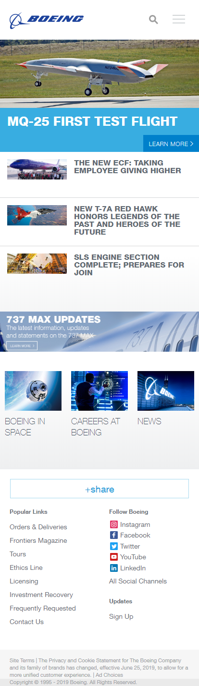
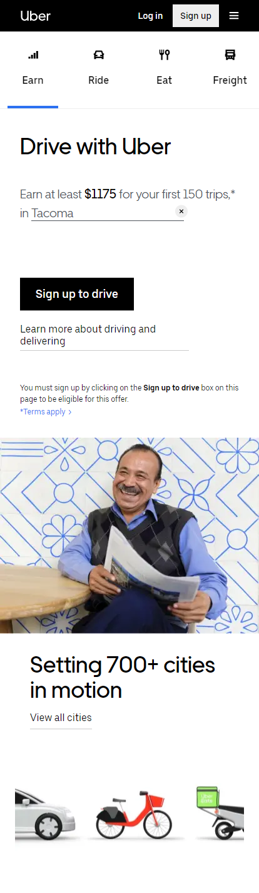

PARC: Alignment
boeing.com
Two principles of alignment were used in this design. The edge alignment, applied on all the text and on the three middle images makes the website more balanced and organized. And the center alignment applied on the rest of the images creates a polished and professional look.
Whitespace & Clean Design
uber.com
The whitespace principle used in this design made the website look neat, simple, attractive, and easy to the eyes. It creates harmony and balance between elements. It enables the objects on the page to exist and helps viewers understand more what they are reading.
PARC: Proximity
northropgrumman.com

The principle of proximity applied in this design helps visualize the different elements, reduce visual clutter, and makes the content more comprehensible. The elements are placed in close proximity to each other to establish a clear and close relationship between them.